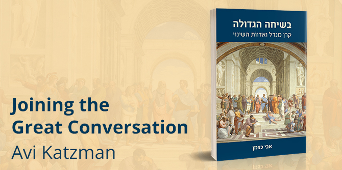

In the introduction to Joining the Great Conversation: The Mandel Foundation and the Ripples of Change, Avi Katzman describes what he calls the “Inca Kingdom School of Leadership”—the Machu Picchu archeological site in Peru, one of the most visited sites in South America and one of the Seven Wonders of the World. According to some researchers, tens of talented young Inca men and women were sent to this site each year for training in a range of subjects and skills that would prepare them to serve as leaders of the empire. In other words, more than six centuries ago, people clearly understood the importance of leadership training.
The imperial Inca training school, however, has little in common with the Jack, Joseph and Morton Mandel Foundation and its approach to leadership training, which is the subject of Katzman’s book. The former was authoritarian and reserved for the ruling classes only, while the latter is the “product of a Jewish culture that demands interaction and disagreement” (p. 2).
The journey of the Jack, Joseph and Morton Mandel Foundation began with a charged meeting between Professor Seymour Fox and Morton L. Mandel. At the time, Fox, a former yeshiva student with a doctorate in education from the University of Chicago, was the acting director of the Jewish Theological Seminary in New York and was devoting his life to Jewish education. Mandel, the son of a family of Jewish immigrants from Poland who settled in Cleveland, was a gifted businessman, public activist, and generous philanthropist – a man “with a warm embrace, a welcoming countenance, a supportive and encouraging demeanor… and a remarkable memory, who remained focused and alert into his tenth decade…. He also knew how to express a very effective tone of displeasure. He was a serious man with many soft spots, and endless generosity” (p. 24).
Fox and Mandel agreed that Jewish education, in a constant state of crisis, must undergo professionalization, which requires great commitment and investment. The two of them sought “to train the senior educators and educational researchers in the Jewish world, develop public leadership, and establish a program that would connect Jewish communities with schools, universities, and the full range of informal educational activities, including youth movements, community centers, Israel trips, and summer camps” (p. 356). They were joined by Annette Hochstein, who served as consultant, planner, and manager, and who is the focus of the book’s first chapter.
The guiding principle behind all Mandel institutions and activities has been the encounter between the world of theory – great ideas, great people, and great books – on the one hand, and “the complex and flawed reality found in practice," on the other (p. 14). "The decisive embodiment of the encounter between these two sides is the living, human encounter – with eyes and ears, mouth and nose, with figures and maps and examples and pages, whether viewed in print or on screen – on the one hand, and with the field itself – with its sweat and dust, obstacles and constraints, noise and stench – on the other hand” (p. 15). This approach was combined with the principle of selecting outstanding people and placing them in key positions – in Morton Mandel’s words, “it’s all about who.” This was how an auto parts business that the Mandel brothers bought for $900 in 1940 grew, within five decades, into a huge, billion-dollar corporation, whose profits enabled the brothers to establish one of the largest Jewish education philanthropic foundations in the world.
Katzman, a faculty member at the Mandel Foundation–Israel, culture critic, journalist, and editor, has taught at institutes of higher education throughout Israel and edited numerous works of non-fiction, including the “Mar’ei Makom” series on education and Israeli and Jewish identity, a joint venture of the Mandel Foundation and Keter Books. His new book, published by the Mandel Foundation and Magnes Press, examines the impact of the Foundation via the personal stories of a number of key figures and Mandel graduates.
Katzman conducted 19 interviews with some of the most notable people involved in the Foundation's establishment and with graduates of its two main full-time programs over the years: the Jerusalem Fellows program and the Mandel School for Educational Leadership. Designed for educators and community leaders from all Jewish denominations, the Jerusalem Fellows program was launched in 1982, was taken under the umbrella of the Mandel Foundation–Israel (which was founded in 1990), and ended its operations in 2011. Launched in the early 1990s, the Mandel School for Educational Leadership aims to develop the future leaders of the field of education in Israel and is now training its 29th cohort. Both programs recruited fellows who had proven professional and managerial experience, aiming to improve the capabilities of the fellows and help them become more effective leaders.
The book is divided into chapters detailing the individual stories of Mandel figures who are dedicating their lives to the complicated field of education in general and Jewish education in particular, and who are leading change. Each story presents the biography and personal journey of an outstanding leader, uncovering their charismatic personality and offering a deeper understanding of the tremendous impact they have had on pedagogical thinking and intellectual discourse in Israel and the Jewish world. As Katzman explains, “Mort Mandel and his desire to create change in the world are the driving engine behind all the stories” in the book, which provides insights into how Mandelian precepts and the principles of Jewish education are translated by the Mandel Foundation into ripples of change.
One of the chapters tells the story of Gila Ben-Har, a graduate of Cohort 1 of the Mandel School for Educational Leadership who subsequently became the head of the Tel Aviv municipal education administration and the CEO of the Center for Educational Technology (CET), and now heads innovation, pedagogy, and digital learning at the Mandel Foundation–Israel. In Katzman’s words, “the main key for discovering new worlds, and unfamiliar directions and paths, is human relations. This is the secret of her excellence as a manager” (p. 158). Ben-Har is the daughter of a Holocaust survivor from Poland, a sister of a fallen IDF soldier, and one of the most influential women in Israel. Under her leadership, CET attained remarkable achievements. As Katzman tells it, she “guides a treasure ship (disguised as a wonderfully designed office building) of cutting-edge knowledge, innovation, and futurism. She is engaged in creativity, in forecasting and developing trends, and ultimately, in shaping the face of Israeli society via the immense influence that the Center for Educational Technology has on the tools and content used by the Israeli education system” (p. 158).
Another chapter tells the story of Ruben Sternschein, a graduate of Cohort 22 of the Jerusalem Fellows program and rabbi of the Jewish community in Sao Paulo, Brazil – the largest Jewish community in Latin America, and one of the largest in the world. Sternschein focuses on the fundamental question facing the Jewish world in our times, and perhaps in all ages (p. 55): “How can Judaism be transformed from fading, decorative nostalgia into a practical philosophy that guides our daily lives? How can Jewish sources be translated into simple yet inspirational language, to make Judaism accessible to all Jews?”
Sternschein explains: “Bringing together these worlds… involves an intensive, complex, and successful combination of philosophy and psychology, education and business, which is also the source of Mandelian language. This dialogue between disciplines opens you up. Each person brings something from their own little bubble, and makes your bubble look different” (p. 59).
The interviews are artfully interwoven with each other throughout the book, all in Katzman’s unique language – analytical, ironic, and occasionally poetic.
Katzman concludes: “Everything is education. This was the message of the prophets of Israel, the Greek philosophers, and their great descendants, each in their own words and images. In the end, education drives change. The desire for change is the beating heart of the Mandel Leadership Institute, the Mandel School for Educational Leadership, and the Mandel Centers for Leadership in the North and in the Negev. And yes, change can sometimes take the form of a light touch that has tremendous impact” (p. 361).
_____
{kind=link}